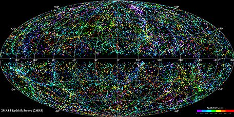

Astronomía
¿Cuánto mide el universo?
AYER 10:10
Tenemos una idea aproximada sobre tu pregunta: creemos que el universo observable mide unos 93.000 millones de años luz. Para que te hagas una idea del tamaño, es como colocar en línea, pegadas unas a otras, 900.000 vías lácteas. Eso nos daría el tamaño del universo físicamente observable que se calcula teniendo en cuenta la edad del cosmos y la distancia que recorrería una partícula de luz en ese tiempo. Esa edad se ha estimado entre 12.000 y 14.500 millones de años.
El universo técnicamente observable con los instrumentos actuales es algo más pequeño, aproximadamente un 2% menor, y su tamaño nos lo da la distancia recorrida por las partículas de luz liberadas poco después del Big Bang, lo que llamamos el destello. Estamos convencidos de que hay otros objetos más allá del universo observable físicamente, pero están tan lejos que su luz no ha tenido tiempo de llegarnos aún. Esto quiere decir que el universo es más grande que lo que somos capaces de ver y de medir. ¿Por qué no va a haber algo más allá si siempre que hemos logrado mirar más lejos hemos encontrado algo? La evidencia histórica nos demuestra que es así. Cuando el conocimiento y el desarrollo de la instrumentación han avanzado y han permitido aumentar el rango de distancia que podemos observar, siempre hemos encontrado nuevos objetos más lejanos. Es decir, el universo técnicamente observable va haciéndose más grande conforme avanza la astrofísica. Por ejemplo, para Galileo descubrir los satélites de Júpiter ya fue un avance en el universo observable.
Precisamente este año se ha cumplido un siglo de lo que se conoce como el Gran Debate. Aquella discusión que tuvo lugar el 26 de abril de 1920 enfrentó a dos astrónomos, Harlow Shapley y Heber Doust Curtis. Shapley decía que nuestra galaxia, la Vía Láctea, era lo único que existía en el universo, que Andrómeda estaba dentro de aquella y que no había nada más. Pero cuando Hubble midió la distancia a varias galaxias descubrió que Andrómeda estaba fuera de la Vía Láctea. Algunos dicen que Hubble descubrió el universo porque probó lo que defendía Curtis en el Gran Debate, que el Cosmos se extendía más allá de la Vía Láctea.
Como te decía al principio, en la actualidad estimamos que el universo observable mide 93.000 millones de años luz. La investigación se basa en la observación de las galaxias más lejanas y en lo que conocemos como radiación de fondo de microondas (el destello del Big Bang al que me refería antes), es decir, en captar la luz de los objetos que nos llega de más lejos. Pero para hacer estas medidas también necesitamos usar otros objetos más cercanos porque tenemos que construir un sistema que vaya teniendo calibraciones sucesivas a diferentes escalas. Se trata de conocer poco a poco y cada vez mejor el universo, empezando por nuestra vecindad y avanzando hacia objetos cada vez más lejanos y más tenues.
Una cuestión importante a la hora de hablar de la medida del universo es que además está en expansión. La luz que nos llega de un objeto salió de él cuando estaba más cerca de lo que está ahora. Por eso el universo físicamente observable también crece, independientemente de si nuestras técnicas de observación mejoran o no. Para saber que está en expansión contamos con una serie de pruebas, por ejemplo las supernovas. Observamos distintas supernovas que tienen características físicas muy similares y construimos unos patrones que nos dicen: a esta distancia y con este tipo de supernova tiene que llegarnos esta cantidad de luz y con este color concreto. Si la cantidad de luz que llega de una supernova es menor que el valor esperado, la explicación es que necesariamente la supernova está más lejos. Así medimos la distancia. Por otro lado, podemos medir el color de la luz que nos llega, que se hará más roja cuanto más rápido se aleje la supernova de nosotros, igual que cuando el sonido de un vehículo que se aleja de nosotros se hace más grave. Los 93.000 millones de años luz es lo que mide ahora (de lado a lado). Pero cuando comenzó, el universo era muchísimo más pequeño y en el futuro será cada vez más grande. De todos modos, para que te hagas una idea de la dificultad de calcular la medida del universo debes saber que ni siquiera tenemos certeza de cuáles son los límites del sistema solar.
NOTICIAS RECIENTES
La Nebulosa del Anillo Azul
Resuelto un misterio cósmico desde hace más de una década
Continuar leyendoIngredientes de la vida
Demuestran que los ingredientes de la vida son más antiguos que las estrellas y los planetas
Continuar leyendoAstrónomo Mark Brown
“El hombre que mató a Plutón” y nos dejó con sólo 8 planetas
Continuar leyendoTelescopio de Arecibo será demolido
Radiotelescopio Arecibo en Puerto Rico será demolido por riesgo de colapso
Continuar leyendoCápsula de Space X
Cápsula de Space X con su primera misión operativa tripulada se acopla a la ISS
Continuar leyendoLa vida en Venus se tambalea
Equipos ponen en duda la validez de la detección de fosfina en el planeta más cercano a la Tierra
Continuar leyendo¿Cómo empezó el universo?
Hay varias teorías y la del Big Bang es la que tiene el mayor número de seguidores entre los astrónomos
Continuar leyendoDescubren una galaxia fósil
La detección fue realizada a través del llamado Experimento de Evolución Galáctica del APOGEE.
Continuar leyendo